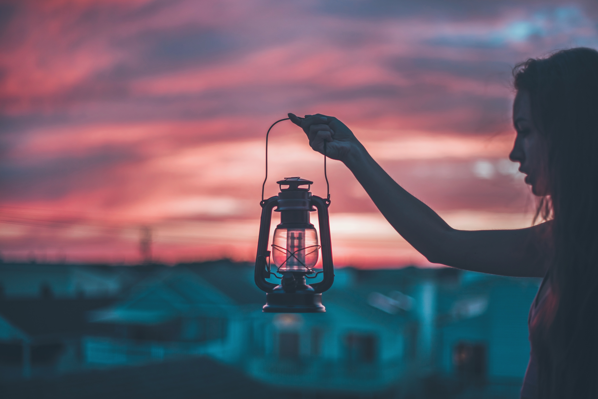

Rabuscos
Ela é incrível
Eu tinha medo das fotos, do que elas poderiam capturar externamente que refletisse algo do meu mundo interno. Mas isso foi antes. Antes de perceber que fazer com que a vida seja um “livro aberto” tem lá suas vantagens. Porque, quando seus sentimentos e personalidade estão expostos, não há a necessidade de gritar ao mundo as suas necessidades.
Eu sou essa bagunça mesmo, essa confusão, essa tempestade. Meu rosto é cheio de perebinhas que só estão melhorando agora, meu cabelo não coopera todos os dias, nem sempre eu amo a imagem que reflete quando olho pro espelho. Mas eu adoro o som da minha risada quando sorrio por besteira; amo esse meu jeito de não se importar por não saber dançar, apenas dançar; acho lindo quando, sem querer, eu faço o dia de alguém melhor.
Sim, eu tenho milhares de defeitos, mas eu sou incrível, e não preciso que ninguém me diga isso. A quantidade de curtidas em uma foto não quantifica o meu valor, porque o meu valor não pode ser quantificado.
Você não queria liberdade? Desapego? Toma aí, faz bom proveito!

E aí, como estão as coisas aí desse lado? Conseguiu se resolver com a família? Decidiu em que vai investir aquela grana que tu juntou? Vai mesmo fazer o mestrado? É, branquinho, já faz um tempo que a gente não se fala, né? E, pelo que eu venho te falar hoje, acredito que não vai dar tempo de você me responder todas essas perguntas.
Relutei muito em te escrever tudo isso, esperei muito, pra ver se as coisas se ajeitavam. Você sabe, eu ia receber uma mensagem tua dizendo que queria me ver, a gente ia se ver e você me abasteceria de ilusões pra não ter que aparecer aqui pelos próximos 21 dias, que seria mais ou menos quando tu iria sentir falta e mandaria outra mensagem.
Na primeira semana eu não me importaria de tu não ter aparecido porque, você não está aqui, mas me disse coisas lindas no outro dia e isso significa que você gosta de mim, certo? Na segunda semana tu também não apareceu, mas “tudo bem, amiga. É porque ele trabalha demais, eu entendo”. Na terceira eu já começaria a acreditar que, na verdade, você só me quer pra curar carência. E era aí que tu aparecia, e o ciclo se repetindo.
Enfim, fui deixando levar. Fui deixando levar até um dia desses, até eu finalmente ter cansado de ter alguém que só ocupa espaço, que só aparece pra dizer “presente” e depois some. Eu precisei de você no dia em que vi uma menina ser assediada no ônibus, precisei que você me fizesse acreditar que ainda valia a pena acreditar nas pessoas. E você? Nem sinal de vida.
Só nesses dias em que tu sumiu, machuquei meu calcanhar e ele sarou duas vezes. Duas. Então, me diz: De que me adianta essas tuas palavras lindas se, quando eu to prestes a pular do penhasco, tu não tá lá pra me segurar? Eu não quero mais esse teu gostar meia boca. Levanta dessa cadeira e vai embora, porque o que não tá faltando é gente querendo sentar nela.
Te dei prioridade durante meses, você fez pouco caso. Você não queria liberdade? Desapego? Toma aí, faz bom proveito!
A vida é queda e pulo...
Eu sempre achei que eu teria um futuro incrível, uma vida brilhante. Que eu não cometeria os mesmos erros daqueles que me cercam. Que eu veria o caminho que eles escolheram e então iria na outra direção. Eu achava que era esperta demais pra ser infeliz. Eu queria demais, eu sabia me esforçar e por isso as coisas funcionariam. Não ia desistir nunca, isso era coisa de gente fraca. Que não se ama. Não tinha como dar errado.
Mas ignorante fui eu, que achei que só haviam dois caminhos, e uma só maneira de errar. Pra todos os lados eu vejo portas, e eu não faço a menor ideia de qual devo abrir. Todas parecem tão certas. Não sei de qual eu vou conseguir abrir mão. E eu tenho tanto, tanto medo de fazer a escolher errada, de me tornar aquilo que um dia eu condenei, de perder. Eu não quero perder.
Fraca fui eu, por achar que desistir era algo que vem de fora. Desistir é quando a gente morre por dentro, e ninguém leva flores e nem chora, porque ninguém soube. E dói porque carregar um caixão no peito é pesado demais. E às vezes a gente não consegue levantar. Decide que não tentar é menos sofrido. E para.
Mas, em dias de sol e quando a gente vê um filme que faz viver parecer fácil, algo dentro de nós se acende. Aos poucos. Então parece que a gente respira com um pouco mais de força, com um pouco mais de vontade. E pensa que, talvez, dessa vez dê certo. E vai. Com coragem, com fé, com medo. Mas vai. E algumas vezes funcionam.
É disso que a vida se trata. Do medo de fracassar, que faz a gente parar por um tempo e depois pegar impulso, e da vontade de vencer, que faz a gente acordar todo dia de manhã como se o ontem fosse só ontem mesmo e ponto. Porque, no fundo, é só isso mesmo que ele é. Não importa o que tenha acontecido.
A vida é feita das nossas desistências e das vezes que a gente tentou de novo. E de novo. E de novo. É feita dos dias em que você acredita em tudo que eu escrevi até agora e daqueles em que você pensa: “Ah, dá um tempo, vai! Você não sabe pelo que eu estou passando. Ninguém entende.” É dia e noite. É sol e chuva. É choro e riso. Queda e pulo. Entende?